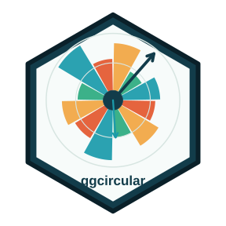
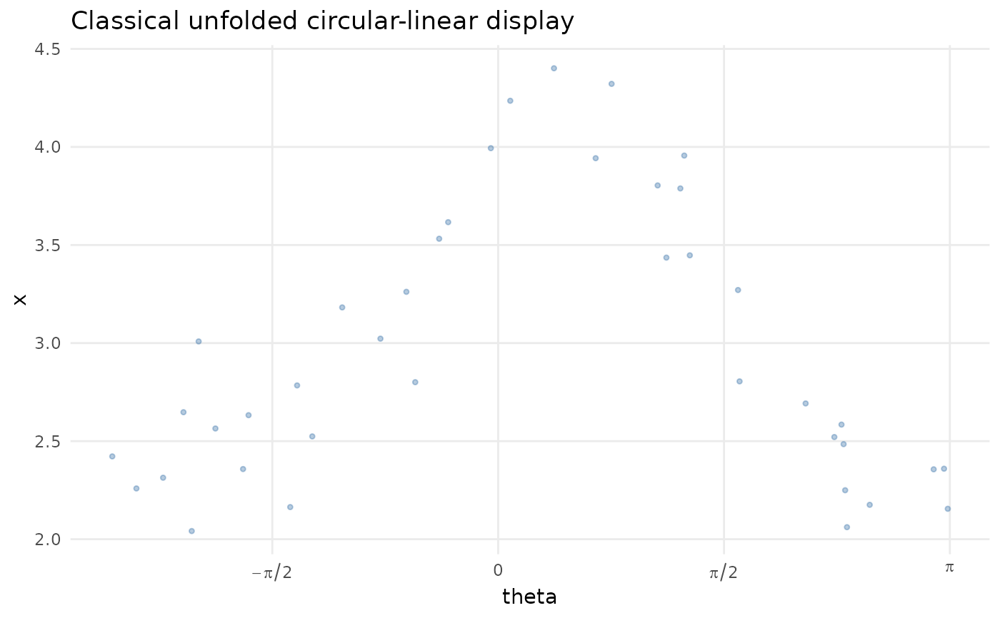

Plot a classical unfolded comparison
Source:R/directional-diagnostics.R
plot_classical_comparison.RdPlot a classical unfolded comparison
Usage
plot_classical_comparison(data, space = c("cylindrical", "toroidal"))See also
Other directional diagnostics:
autoplot.diagnostic_atlas_data(),
diagnostic_atlas_data(),
diagnostic_scenarios(),
plot_diagnostic_atlas(),
simulate_cyl_diagnostic(),
simulate_tor_diagnostic()
Examples
dat <- simulate_cyl_diagnostic(n = 40, scenario = "smooth", seed = 1)
plot_classical_comparison(dat, "cylindrical")
